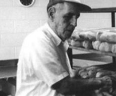
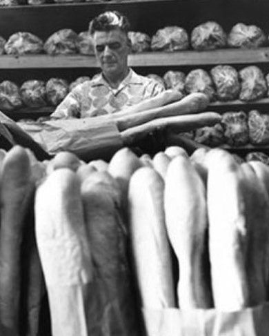
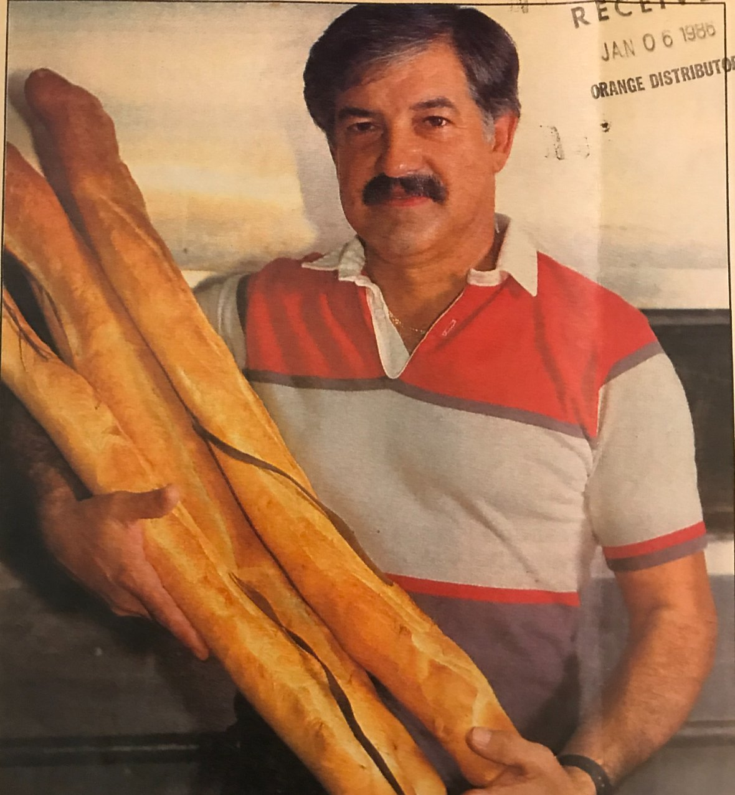
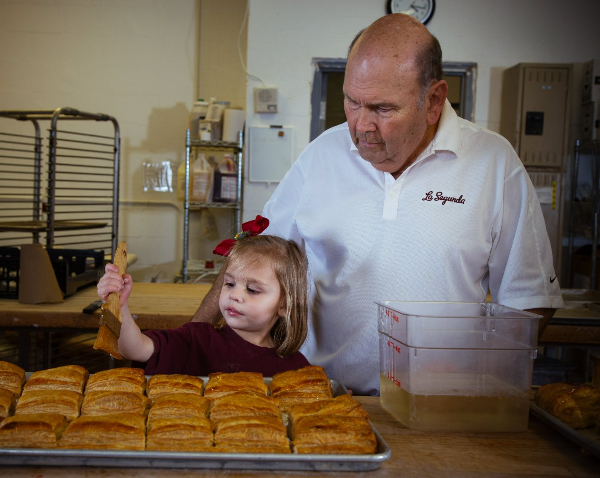
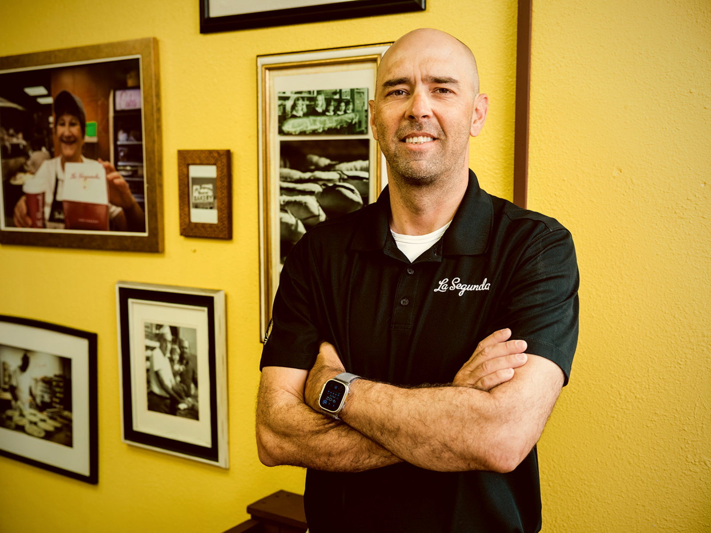
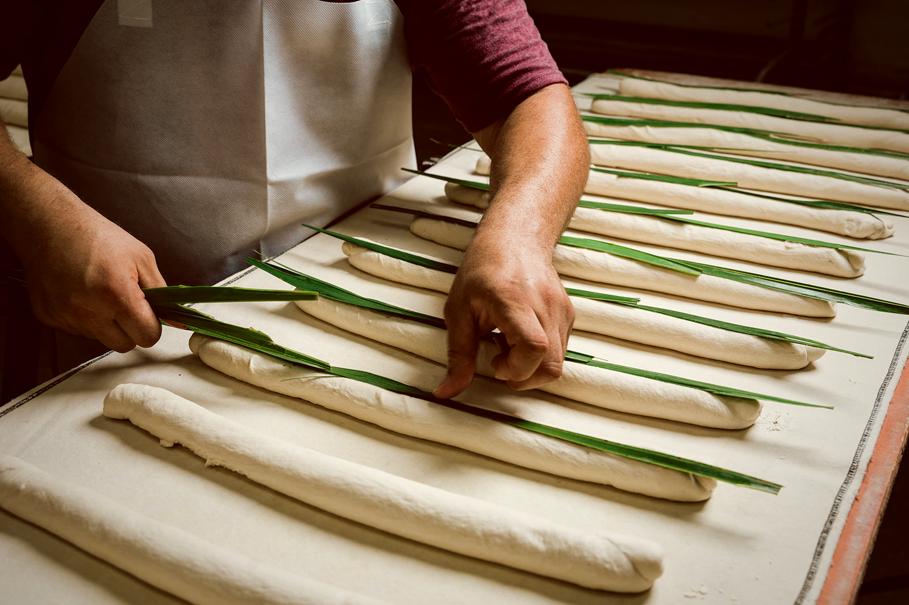
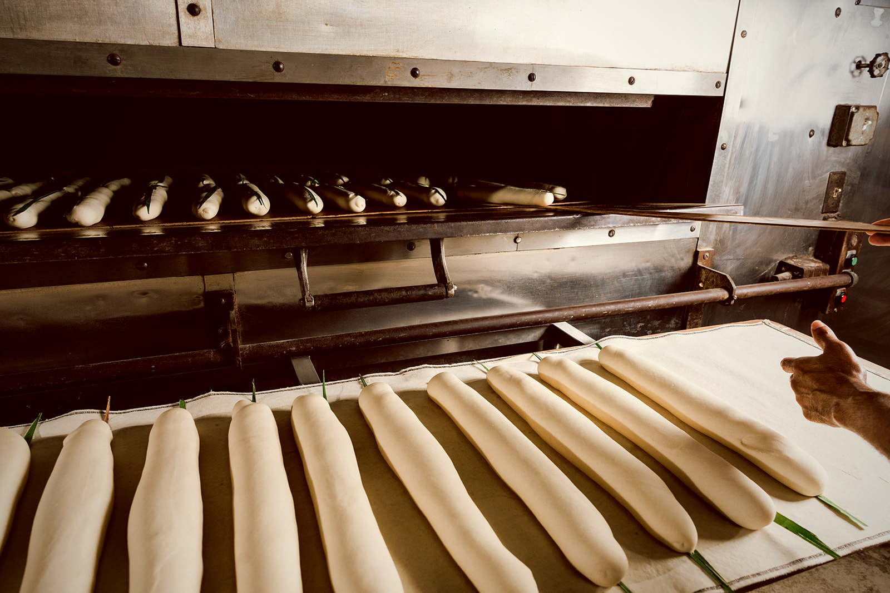

I
1st Generation
Juan Moré
Establishes La Segunda Central Bakery in Ybor City. The recipe, the palmetto leaf tradition, and the stone hearth — all his vision. Becomes a partner in nearly every Cuban bread bakery in the area.
Four Generations · One Recipe
From the bakeries of Catalonia to the cigar quarter of Ybor City — the story of a defining name in Tampa-style Cuban bread, family-owned for four generations since .
I. The Founding
Juan Moré was born in the Catalan region of Spain. When he fought in the Spanish-American War in Cuba, he discovered something that would change his life — and the taste of Tampa forever.
Armed with a recipe and a dream, Moré chose Ybor City — Tampa's Cuban quarter, alive with cigar factories and Latin American immigrant families — as the place to build his bakery. La Segunda Central Bakery has been baking in Ybor City ever since.
“Out of war came a love for the taste of authentic Cuban bread.”
The Founding Story · Juan Moré
Around World War I, Moré joined fellow bakers and cigar makers to open three Ybor City bakeries: La Primera, La Segunda, and La Tercera. When the others folded, Juan purchased La Segunda outright — and the name, the second, would prove prophetic.
II. The Fire & The Rebuild
In , the original bakery burned to the ground. The Moré family rebuilt — on the same block, in the heart of Ybor City — and have baked at 2512 N. 15th Street ever since.
The name had been La Segunda — Spanish for the second — from the very first day, a nod to its place among the three Ybor City bakeries Juan Moré helped open around World War I. After the fire, the name carried a second meaning. The bakery that rose from the ashes was, quite literally, the second La Segunda.
What didn't burn: the recipe, the palmetto-leaf tradition, the family. The new building was designed around the same craft — stone hearth, hand-shaped loaves, daily bake. Same family. Same recipe. Sixty-five years and counting at 2512 N. 15th Street.
Juan Moré's recipe, palmetto leaf, and stone hearth have been passed — untouched — from father to son to son to son. The bakery has never been sold.
I
1st Generation
Juan Moré
Establishes La Segunda Central Bakery in Ybor City. The recipe, the palmetto leaf tradition, and the stone hearth — all his vision. Becomes a partner in nearly every Cuban bread bakery in the area.


II
1940s
2nd Generation
Cuco & Anthony Moré
Juan's sons enter the family business, growing La Segunda into a Tampa institution and expanding wholesale operations across the region.


III
1970s
3rd Generation
Raymond & Tony Moré
Carried the bakery through decades of change. The original recipe untouched, the hand-baking traditions intact, the palmetto leaf still laid on every single loaf.

IV
Today
4th Generation
Anthony Copeland Moré
Tony's son keeps Juan's dream alive — over 20,000 loaves baked daily. Through 46 distributor locations including Sysco, US Foods, PFG (Performance Food Group), GFS (Gordon Food Service), Ben E. Keith and Cheney Brothers, La Segunda product can reach buyers in 35+ states. Active in 18 today. Same recipe. Same hearth. Same palmetto leaf.
"
We believe true artisanship is beautiful — and gains beauty as it is passed through the generations.La Segunda Central Bakery · Via Ybor · Est. MCMXV


Every loaf is mixed, leafed, crusted, and hearthed by hand — the way Juan taught it. Around the clock. Every day. Since 1915.
i
Master bakers combine the same ingredients Juan Moré brought from Cuba. Some have worked these ovens for over 20 years.
ii
A freshly cut palmetto leaf is laid across each loaf. It holds moisture in and creates the signature split. Only authentic Cuban bread uses the leaf.
iii
High-powered fans harden the exterior — producing the signature crusty outside and pillowy soft interior that defines La Segunda bread.
iv
Each loaf is individually hand-placed into the stone hearth and baked for 45 minutes. Every loaf. Every day. Around the clock since 1915.
A decade of coverage from the publications that cover American food — Southern Living, Saveur, Garden & Gun, National Geographic, Bon Appétit, Atlas Obscura, and the Tampa Bay Times. The full bibliography lives on the press page.
Read all press coverage →“
Columbia Restaurant · Est. 1905 · Ybor City, Tampa, FLAmerica's oldest restaurant has served La Segunda Cuban bread exclusively for over a century.
Carry the Original
Join Tampa's most iconic restaurants. Reachable in 35+ states through 46 distributor locations — active in 18 today. Giuseppe Bua, our National Sales Manager, handles every account personally.